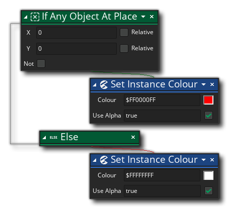

Beschreibung
Diese Aktion wird verwendet, um zu überprüfen, ob sich irgendeine Instanz eines Objekts an einer Position befindet, die auf der Kollisionsmaske der aufrufenden Instanz basiert. Sie geben die Position an, bei der es sich um eine absolute Position oder eine Position relativ zur Instanz handeln kann, und die Aktion wird zurückgegeben true wenn es zu einer Kollision kommt oder false wenn nicht. Sie können auch überprüfen Sie die „Not“ Flagge zu überprüfen, ob es nicht eine Kollision an der gegebenen Position ist, und die Aktion wird dann wieder true wenn keine Kollisionen gefunden werden und false Andernfalls. Kollisionen werden basierend auf der Kollisionsmaske der aufrufenden Instanz berechnet, die die Kollisionsmaske irgendeiner Instanz an der Position überlappt (als ob sie an der Position "platziert" würde).
WICHTIG! Kollisionen werden nur für diejenigen Instanzen registriert, die eine gültige Kollisionsmaske haben, dh: sie haben ein Sprite, das der Kollisionsmaske zugeordnet ist sprite_index oder ein Sprite, das dem zugewiesen ist mask_index. Wenn eine der Instanzen in der Kollision keine Kollisionsmaske hat, wird die Kollision nicht erkannt, unabhängig davon, was die Instanz zu der Zeit zeichnet.Beachten Sie, dass Aktionen in einen "if" -Block eingefügt werden sollten, wenn sie auf die Seite der Aktion fallen, wie im Bild unten gezeigt:

Aktionssyntax:
Argumente:
Streit Beschreibung x Die zu überprüfende x-Position y Die zu prüfende y-Position
Beispiel:
Der obige Aktionsblockcode prüft auf eine Kollision an der aktuellen Position der Instanz und wenn eine gefunden wird, mischt er die Instanz mit Rot, andernfalls wird die Mischung als normal (weiß) belassen.